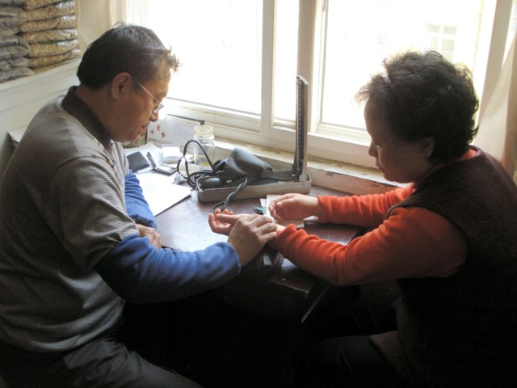

(continuation)
In Traditional Chinese Medicine, doctors do not simply take your pulse, they "read" your pulse for minutes at a time and then make a specific diagnosis of the state of your health or health problems.
| GO TO PAGE 7 OF 9 | BACK TO DATE PAGE | ||||||||||||||||
| Fish At The Doctor (continuation) |
|||||||||||||||||
| We're used to having our pulse "taken", a process that can be as short as 15 or 30 seconds. In Traditional Chinese Medicine, doctors do not simply take your pulse, they "read" your pulse for minutes at a time and then make a specific diagnosis of the state of your health or health problems. |
|||||||||||||||||
|  | |||||||||||||||||
| The lady, who graciously allowed me to take these pictures, is well on her way to recovering from a stroke. | |||||||||||||||||
| GO TO PAGE 7 OF 9 | BACK TO DATE PAGE | ||||||||||||||||